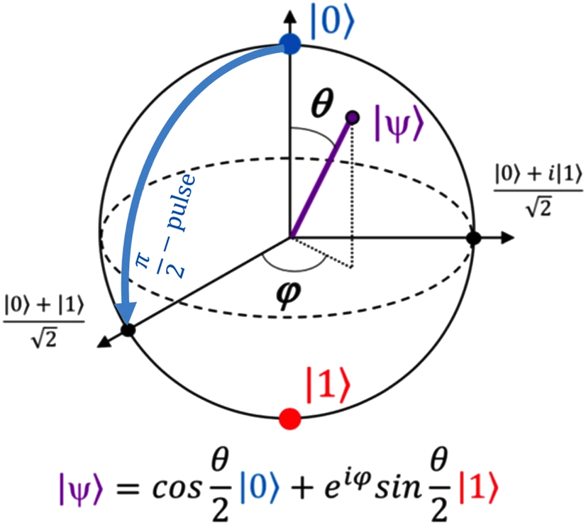

1. Principy fungování a stav technologie
1. Fyzikální principy
Základním stavebním kamenem kvantové kryptografie není klasický bit (který nabývá hodnoty 0 nebo 1), ale kvantový bit neboli qubit. V praxi se pro přenos klíčů nejčastěji využívají fotony (částice světla), u kterých informaci kódujeme pomocí jejich polarizace.
Geometrická reprezentace stavu qubitu. Zatímco klasický bit může nabývat pouze hodnot 0 nebo 1 (póly sféry), qubit se může nacházet v obecném stavu kdekoli na povrchu sféry.
Bezpečnost přenosu nevychází ze složitosti matematických úloh, ale ze dvou klíčových zákonů kvantové mechaniky:
1.1 Heisenbergův princip neurčitosti
Tento princip říká, že u kvantových částic nelze současně s libovolnou přesností změřit určité páry vlastností. V kontextu kryptografie to znamená, že měření mění stav systému. Pokud se někdo pokusí foton změřit, aby zjistil jeho hodnotu, nevyhnutelně změní jeho polarizaci.
1.2 No-cloning theorem (Teorém o zákazu kopírování)
Toto je nejdůležitější pravidlo pro bezpečnost. Říká, že je nemožné vytvořit identickou kopii neznámého kvantového stavu.
Díky těmto principům vzniká unikátní bezpečnostní vlastnost:
1.3 Detekovatelnost odposlechu
Pokud se útočník (v kryptografii tradičně nazývaný "Eve") pokusí zachytit fotony posílané mezi odesílatelem ("Alice") a příjemcem ("Bob"), musí je změřit. Tím ale naruší jejich kvantový stav a vnese do komunikace chyby. Alice a Bob následnou kontrolou chybovosti (QBER – Quantum Bit Error Rate) zjistí, že kanál není bezpečný, a přenos přeruší.
2. Používané metody a protokoly
Samotná kvantová kryptografie se nepoužívá k šifrování velkých objemů dat (filmů, dokumentů), protože je relativně pomalá. Používá se pro technologii QKD (Quantum Key Distribution) – tedy k bezpečnému vytvoření a předání náhodného šifrovacího klíče. Jakmile mají obě strany klíč, použijí ho pro klasické symetrické šifrování (např. AES), které je velmi rychlé. Nejznámějším a nejpoužívanějším protokolem je BB84.
2.1 Protokol BB84
Tento protokol navrhli Charles Bennett a Gilles Brassard v roce 1984. Je to první a stále nejrozšířenější protokol pro distribuci kvantového klíče. Funguje na principu posílání fotonů ve dvou různých bázích:
a) Rektilineární báze (+): Měří polarizaci 0° (horizontální) a 90° (vertikální).
b) Diagonální báze (x): Měří polarizaci 45° a 135°.
Průbeh přenosu:
1. Odeslání (Alice): Alice vygeneruje náhodné bity a pro každý bit náhodně zvolí jednu ze dvou bází (+ nebo x). Pošle fotony Bobovi.
2. Měření (Bob): Bob neví, jakou bázi Alice použila. Pro každý příchozí foton si náhodně zvolí bázi a změří ho.
3. Sifting (Prosívání): Po skončení přenosu Alice a Bob použijí veřejný (nezabezpečený) kanál, aby si řekli, jaké báze použili (neříkají si výsledky měření, jen typy bází).
4. Shoda: Ponechají si pouze ty bity, u kterých se shodli na stejné bázi. Ostatní zahodí. Tím vznikne tzv. "surový klíč" (Raw Key).

1.3 Detekovatelnost odposlechu
Pokud se útočník (v kryptografii tradičně nazývaný "Eve") pokusí zachytit fotony posílané mezi odesílatelem ("Alice") a příjemcem ("Bob"), musí je změřit. Tím ale naruší jejich kvantový stav a vnese do komunikace chyby. Alice a Bob následnou kontrolou chybovosti (QBER – Quantum Bit Error Rate) zjistí, že kanál není bezpečný, a přenos přeruší.